🧩 ASCAD: рисуем детали кодом на Python
Привет! Это твой путеводитель по ASCAD — программе, где 3D-детали создаются не мышкой, а маленькими скриптами на Python. Ты пишешь несколько строк — и на экране появляется настоящая объёмная деталь, которую можно напечатать на 3D-принтере.
Открой эту папку как хранилище Obsidian (Open folder as vault). Заметки связаны ссылками — переходи по ним по порядку, как по урокам.
📚 Уроки по порядку
- 1. Системы координат — где «верх», «низ» и куда смотрит деталь. Самый важный урок!
- 2. Первая деталь — кубик и цилиндр за 4 строки.
- 3. Эскиз и выдавливание — рисуем плоскую фигуру и «вытягиваем» её в объём.
- 4. Отверстия и вырезы — как сделать отверстие.
- 5. Эскиз на грани — рисуем прямо на стенке детали.
- 6. Отладчик — пошаговое выполнение: смотрим, как деталь растёт.
- 7. Внешний запуск (Cursor) — пишем код в своём редакторе, деталь строится в браузере.
- Шпаргалка — все команды на одной странице.
🚀 Самый первый запуск
Открой в ASCAD правую панель Python и набери:
from vcad import Scene
scene = Scene()
body = scene.add_body(name="Привет")
body.cube(width=20, height=20, depth=20)
Нажми Запустить — появится кубик. Поздравляю, ты только что «запрограммировал» деталь! 🎉
Главное — чтобы к моменту, когда скрипт закончит выполняться, в нём
существовала переменная с именем scene: именно её ASCAD рисует.
Обычно её создают в начале (scene = Scene()), а потом наполняют
деталями — и она «живёт» до конца. То есть «в конце» значит «к моменту
завершения», а не «на последней строке». Отдельно «сохранять» ничего
не нужно — ASCAD сам всё рисует.
Дальше → 1. Системы координат
🖥️ Интерфейс и режимы
Окно ASCAD простое: в центре — 3D-вьюпорт (где видно деталь), по краям — панели, а вверху — панель инструментов. Слева обычно дерево сцены (список тел и операций), справа можно открыть панель Python.
Три режима работы
ASCAD переключается между тремя режимами — у каждого свои инструменты:
- Часть (деталь) — лепишь одну деталь: эскизы, выдавливание, скругления.
- Эскиз — рисуешь плоский контур (открывается, когда начинаешь эскиз).
- Сборка — ставишь несколько деталей вместе и соединяешь связями (см. Экземпляры и сопряжения); тут же оживает механизм.
Навигация в 3D
- Вращать вид — зажми среднюю кнопку мыши (или правую) и двигай.
- Зум — колесо мыши.
- Сдвиг — Shift + средняя кнопка.
- Кубик-ориентир в углу показывает, где X/Y/Z (см. 1. Системы координат).
Дерево сцены
Список того, из чего собрана деталь: её операции по порядку (эскиз → выдавливание → скругление…). Клик по элементу выделяет его; отсюда же открываются «Свойства детали» (цвет, материал).
Меню «?» в углу — это справка (то, что ты читаешь), обратная связь, настройки и переключение режимов совместной работы (см. Режимы и комнаты).
Дальше → Проект — сохранение и открытие
💾 Проект: сохранение и открытие
Чтобы не потерять работу, проект сохраняют в файл. У ASCAD один удобный
формат — .ascad.json: в одном файле лежит всё (детали, сборка, скрипты).
Сохранить и открыть
- «Сохранить проект в файл…» — записывает весь проект в один
.ascad.json. - «Открыть проект в файл…» — загружает его обратно.
ASCAD работает прямо в браузере и держит проекты у тебя на компьютере —
ничего не уходит на сервер. Файл .ascad.json можно переслать другу или
учителю — он откроет ровно то же самое.
Автооткрытие последнего
Когда ты возвращаешься в ASCAD, он сам открывает последний проект — продолжай с того места, где остановился. Новый пустой проект он не создаёт и старый не дублирует.
Обмен деталями
Отдельную деталь можно сохранить/загрузить как файл, чтобы перенести её в другой проект. В сборке есть «Импорт детали» — добавить готовую деталь в текущий проект (см. Экземпляры и сопряжения).
Чтобы показать работу, пришли .ascad.json — это «фотография» всего проекта,
её можно открыть на другом компьютере.
Дальше → Инструменты эскиза
✏️ Инструменты эскиза
Эскиз — это плоский рисунок (контур), из которого получается объёмная деталь. Сначала рисуешь фигуру на плоскости, потом «вытягиваешь» её в 3D (см. Выдавливание и вырез).
Как войти в эскиз
- Выбери плоскость (XY, XZ, YZ) или грань уже готовой детали.
- Нажми «Эскиз» — появится панель инструментов рисования.
- Нарисуй контур, выйди из эскиза и выдавливай.
Чтобы фигуру можно было превратить в деталь, контур должен быть замкнутым (линии соединяются в кольцо, без разрывов). Незамкнутый контур годится для прорези или направляющей.
Инструменты рисования
- Точка — вспомогательная точка (центр, привязка).
- Линия — отрезок по двум точкам.
- Прямоугольник — по двум углам; от центра — от середины.
- Окружность — центр + радиус.
- Дуга — по 3 точкам или из центра.
- Полигон — правильный многоугольник (задаёшь число сторон).
- Эллипс — две полуоси.
- Паз (slot) — «капсула»: две полуокружности, соединённые линиями.
- Полилиния — много отрезков одной фигурой.
- Сплайн — плавная кривая по точкам.
- Текст — буквы как контур (см. Текст в эскизе).
Правки контура
- Обрезать — убрать кусок линии до пересечения.
- Скругление / фаска — скруглить или срезать угол между линиями.
- Зеркало — отразить элементы относительно оси.
- Массив — размножить элементы (линейно или по кругу).
Курсор «прилипает» к концам, центрам и пересечениям — так фигуры стыкуются точно. Можно привязываться и к рёбрам готовой детали.
Дальше → Размеры и ограничения
📐 Размеры и ограничения
Нарисовать «на глаз» — это полдела. Чтобы деталь была точной и легко менялась, контуру задают размеры и ограничения.
Размеры
Размер фиксирует число: длину отрезка, диаметр окружности, расстояние между точками. Поставил размер 40 — линия станет ровно 40 мм; поменял число — фигура перестроится.
Размеру можно дать имя-параметр. Тогда несколько размеров меняются вместе, если они зависят от одного параметра.
Ограничения
Ограничение задаёт правило между элементами, без чисел:
- Горизонталь / вертикаль — линия строго по оси.
- Совпадение — две точки в одном месте.
- Параллельность / перпендикулярность — линии параллельны или под 90°.
- Равенство — одинаковая длина/радиус.
- Касание, концентричность, симметрия, точка на линии…
Чем больше правил, тем «жёстче» эскиз: он перестаёт «болтаться» и ведёт себя предсказуемо.
Когда правил и размеров достаточно, эскиз становится полностью определён — его уже нельзя случайно потянуть и сломать.
Полезные правки
- Обрезать — отрезать лишнее до пересечения.
- Скругление / фаска — на углах между линиями.
- Зеркало — относительно оси симметрии.
- Массив — линейный или круговой повтор.
Дальше → Текст в эскизе
🔤 Текст в эскизе
Можно написать настоящие буквы прямо в эскизе и превратить их в объём — табличку, надпись, гравировку.
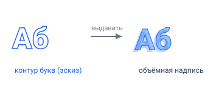
Контур букв (эскиз) → выдавливание → объёмная надписьКак добавить текст
- В эскизе выбери инструмент «Текст».
- Кликни в том месте, где начнётся надпись (левый край строки).
- В окошке введи строку и высоту букв (в мм) → ОК.
- Контуры букв появятся в эскизе.
Поддерживаются русские и латинские буквы, цифры и знаки (шрифт DejaVu Sans).
Правка и перемещение
- Двойной клик по тексту — открыть окно правки (или ПКМ → «Изменить текст»).
- Поменяй строку или высоту — контуры пересчитаются.
- Перетаскивай за опорную точку (крестик слева), чтобы сдвинуть надпись.
Объём из текста
Выйди из эскиза и применяй как к любому контуру:
- Выдавить → выпуклые буквы (поднятая надпись).
- Вырез → гравировка. Внутренние «островки» букв (в о, р, в, а, б…) остаются материалом — буквы читаются правильно.
Сделай пластину (прямоугольник → выдавить), затем эскиз с текстом на её верхней грани и вырежи его неглубоко — получится гравированная табличка.
sk.text((0, 0), "Привет", height=12) — то же самое из скрипта
(см. Справочник API).
🌀 Вращение, оболочка, массивы
Кроме выдавливания есть ещё несколько способов получить объём — для тел вращения, тонкостенных деталей и повторяющихся элементов.
Вращение
Крутит контур вокруг оси и заметает деталь вращения — вал, чашка, бутылка.
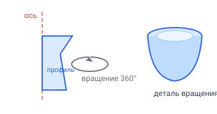
Профиль + ось → вращение 360° → деталь вращения- Вращение — добавить материал.
- Вырез вращением — убрать (например, проточку на валу). Контур рисуют сбоку от оси; полный оборот = 360°, можно меньше.
Оболочка (shell)
Делает деталь полой: выбираешь грань-«крышку», задаёшь толщину стенки — внутри образуется полость. Так получают стаканы, корпуса, коробки.
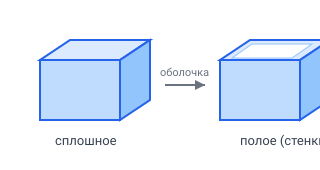
Оболочка: сплошная деталь → полая со стенками заданной толщиныМассивы
Размножают элемент, не рисуя его заново:
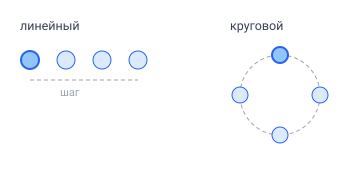
Линейный массив (ряд с шагом) и круговой (по кругу)- Линейный массив — ряд копий с шагом (отверстия в планке).
- Круговой массив — копии по кругу (зубья, болты по фланцу).
Лофт и свип (продвинутое)
- Лофт — плавный переход между несколькими сечениями.
- Свип — протянуть профиль вдоль траектории; есть спираль и скручивание (twist) — пружины, резьба, винтовые формы. Как сделать настоящую резьбу — в уроке Резьба — болт и гайка.
Симметрично вокруг оси — вращение. Тонкие стенки — оболочка. Много одинаковых — массив. Сложная плавная форма — лофт/свип.
Дальше → Материал и масса
📦 Выдавливание и вырез
Из плоского эскиза получают объём двумя главными операциями: выдавливание (добавить материал) и вырез (убрать материал).
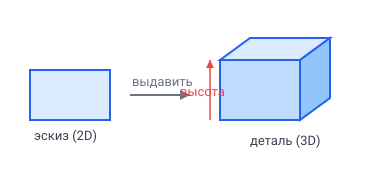
Плоский эскиз → выдавить на высоту → объёмная детальВыдавливание
Берёт замкнутый контур и «вытягивает» его на заданную высоту.
- Нарисуй контур в эскизе и выйди из него.
- Выбери эскиз → «Выдавить».
- Задай высоту. Готово — появилась деталь.
Параметры: высота, двусторонность (в обе стороны от эскиза), небольшой уклон (стенки под углом).
Вырез
То же выдавливание, но вычитает объём из существующей детали — так делают отверстия и карманы (см. Отверстия и вырезы для скриптового варианта).
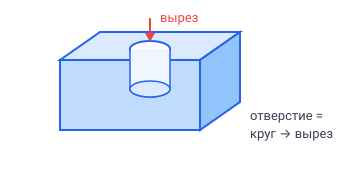
Отверстие: нарисуй круг и вырежи его сквозь деталь- Эскиз на грани или плоскости.
- «Вырез» на нужную глубину (можно «насквозь»).
После создания не нужно лезть в меню: у детали появляются стрелки — потяни, чтобы менять высоту прямо в 3D. Рядом — плавающая карточка «Свойства», где можно вписать точное число.
В дереве сцены у выдавливания показывается его высота — удобно отличать несколько выдавливаний.
Дальше → Скругление и фаска
⚖️ Материал и масса
Деталь можно сделать «настоящей» — задать материал, и ASCAD сам посчитает её массу. Это нужно для расчёта сил в механизмах (см. Силы и графики).
Как задать материал
- Открой «Свойства детали» (значок информации у детали в дереве сцены).
- Выбери материал из списка: сталь, алюминий, латунь, медь, титан, ABS, PLA, нейлон, дерево, стекло.
- Рядом сразу показывается рассчитанная масса и плотность.
Формула простая: масса = плотность × объём. Объём ASCAD берёт из геометрии детали, плотность — из материала.
Своя плотность
Если нужного материала нет в списке, выбери «Своя плотность» и впиши число (кг/м³) — масса пересчитается.
Масса (и положение центра масс) нужны механизму, чтобы посчитать силы: какая нагрузка приходит на оси и подшипники, какой момент нужен мотору.
body.set_material("steel") или body.set_material(density=1200)
(см. Справочник API).
🔩 Резьба: болт и гайка
Резьба — это виток, навитый по спирали вокруг оси. Значит, её можно построить
одним движением: нарисовать профиль витка и протянуть его по спирали
(свип по спирали, sweep_helix).
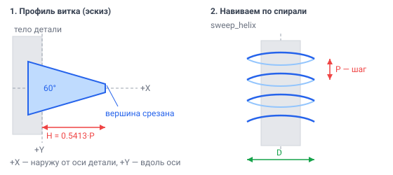
Слева — профиль витка в эскизе, справа — он же, навитый по спиралиРезьба описывается двумя числами:
- D — наружный диаметр (у М10 это 10 мм);
- P — шаг, на сколько миллиметров виток поднимается за один оборот.
Обычный Свип в меню умеет тянуть профиль только по плоскому эскизу, а
спираль плоской не бывает. Поэтому спираль задают числами — командой
sweep_helix в правой панели Python. Мышкой такую траекторию не нарисовать.
Три правила, без которых не получится
Правило 1. Резьбу ДОБАВЛЯЮТ, а не вырезают. Может показаться, что резьба —
это канавка, которую надо вырезать из гладкого цилиндра. Так делать нельзя:
sweep_helix(..., is_cut=True) в ASCAD молча не срабатывает — деталь остаётся
гладкой, будто ничего не произошло. Поэтому:
- болт = стержень по внутреннему диаметру + виток, торчащий наружу;
- гайка = шестигранник с отверстием по наружному диаметру + виток, торчащий внутрь.
Правило 2. Обязательно frenet=True. Без этого профиль витка медленно
проворачивается по мере навивки: начинается как надо, а через несколько
оборотов ложится набок. Резьба получается «гуляющая» — витки то выше, то ниже,
диаметр пляшет. Один параметр frenet=True жёстко привязывает профиль к
спирали, и виток идёт ровно от начала до конца.
Правило 3. Профиль рисуют «сбоку», в местных координатах. Точка (0, 0)
эскиза-профиля ложится прямо на спираль, и дальше:
| Ось эскиза | Куда смотрит на детали |
|---|---|
+X |
наружу от оси детали (в сторону от центра) |
+Y |
вверх, вдоль оси детали |
Поэтому виток «наружу» — это профиль с вершиной в +X, а виток «внутрь» —
он же, отражённый в −X.
Размеры профиля
Профиль резьбы — равнобокая трапеция с углом 60°: у настоящей резьбы вершина витка тоже срезана площадкой, острого гребня не бывает.
H = 0.5413 · P # глубина профиля
FLAT = P / 16 # половина площадки на вершине
BASE = FLAT + (H + OVER) · tg30° # половина основания
OVER (0.1 мм) — небольшой запас: основание трапеции утапливают в тело детали,
чтобы виток приваривался к нему надёжно, а не касался по касательной.
Если свести профиль в точку (треугольник вместо трапеции), ASCAD сдвинет весь виток к оси примерно на треть его высоты — резьба выйдет мельче задуманной. Срезанная вершина и правильнее по стандарту, и строится точно.
Свип по спирали разворачивает трапецию на 180°: та сторона, что в списке
точек стоит на строке с H (у вершины), на готовой детали оказывается
у стержня. Поэтому в коде широкая сторона BASE записана на строке с
H, а узкая FLAT — на строке с -OVER. На детали получается как надо:
широкое основание витка прижато к стержню, узкая площадка — снаружи.
Готовый скрипт
Открой правую панель Python, вставь этот код и нажми Запустить — появятся болт М10×1.5 и гайка рядом с ним.
from math import cos, radians, tan
from vcad import Plane, Scene
# ── Параметры резьбы (М10×1.5) ─────────────────────────────
D = 10.0 # наружный диаметр резьбы, мм
P = 1.5 # шаг резьбы, мм
L = 20.0 # длина резьбовой части болта, мм
AF = 17.0 # размер «под ключ», мм
HEAD_H = 7.0 # высота головки болта, мм
NUT_H = 8.0 # высота гайки, мм
CLR = 0.4 # зазор для 3D-печати (по диаметру), мм
H = 0.5413 * P # глубина профиля резьбы
FLAT = P / 16 # половина площадки на вершине витка
OVER = 0.1 # утопить основание витка в тело
BASE = FLAT + (H + OVER) * tan(radians(30)) # половина основания витка
RUN = BASE + 0.15 # сбег: отступ витков от торцов
R_HEX = AF / 2 / cos(radians(30)) # радиус описанной окружности
# Профиль витка: трапеция — вершина срезана площадкой 2·FLAT.
# Широкая сторона (BASE) записана на строке с H, но на детали ложится
# к стержню: свип по спирали разворачивает профиль на 180°.
ridge_out = [(-OVER, -FLAT), (-OVER, FLAT), (H, BASE), (H, -BASE), (-OVER, -FLAT)]
ridge_in = [(OVER, -FLAT), (OVER, FLAT), (-H, BASE), (-H, -BASE), (OVER, -FLAT)]
scene = Scene()
# ── Болт ───────────────────────────────────────────────────
r_core = D / 2 - H
bolt = scene.add_body(name="Болт М10")
sk = bolt.start_sketch(plane=Plane.XY) # головка «под ключ»
sk.polygon((0, 0), R_HEX, 6)
bolt.extrude(sk, 0, height_backward=HEAD_H)
sk = bolt.start_sketch(plane=Plane.XY) # стержень по внутреннему диаметру
sk.circle((0, 0), r_core)
bolt.extrude(sk, L)
sk = bolt.start_sketch(plane=Plane.XY) # виток резьбы — наружу
sk.polyline(ridge_out)
bolt.sweep_helix(sk, pitch=P, height=L - 2 * RUN, radius=r_core,
center=(0, 0, RUN), frenet=True)
# ── Гайка (рядом, x = 30) ──────────────────────────────────
r_bore = (D + CLR) / 2
nut = scene.add_body(name="Гайка М10")
sk = nut.start_sketch(plane=Plane.XY) # шестигранник
sk.polygon((30, 0), R_HEX, 6)
nut.extrude(sk, NUT_H)
sk = nut.start_sketch(plane=Plane.XY) # отверстие
sk.circle((30, 0), r_bore)
nut.cut(sk, NUT_H)
sk = nut.start_sketch(plane=Plane.XY) # виток резьбы — внутрь
sk.polyline(ridge_in)
nut.sweep_helix(sk, pitch=P, height=NUT_H - 2 * RUN, radius=r_bore,
center=(30, 0, RUN), frenet=True)
Что здесь происходит, по шагам
Болт.
- Шестигранник → выдавливаем назад (
height=0, height_backward=HEAD_H), чтобы головка выросла вниз, под плоскость XY. - Круг радиусом
r_core = D/2 − H→ выдавливаем вверх на длинуL. Это внутренний диаметр резьбы, «сердцевина» стержня. - Профиль
ridge_out→sweep_helixпо спирали радиусомr_core. Вершина трапеции торчит наружу ровно наHи как раз доходит до наружного диаметра D.
Гайка. То же самое наоборот: шестигранник, отверстие радиусом
r_bore = (D + зазор)/2, и виток ridge_in, который растёт из стенки
отверстия внутрь.
Спираль делают короче детали на 2·RUN и приподнимают на RUN
(center=(0, 0, RUN)). Иначе крайние витки вылезут за торец и будут висеть
в воздухе — деталь так не напечатается.
Как проверить, что резьба вышла ровной
У правильной резьбы диаметр не «дышит» по длине. Поверни деталь боком и
посмотри на силуэт: вершины витков должны лежать на одной прямой, а не
волной. Если волна — потерян frenet=True.
Числами (для М10×1.5 из скрипта): вершина витка болта — ровно на радиусе 5.000, впадина — 4.188; у гайки отверстие 5.200, вершина витка — 4.388. Между болтом и гайкой остаётся зазор 0.2 мм на сторону — она наворачивается.
Чтобы болт вкручивался в гайку
Резьбы должны быть одинаковые (совпадают D и P), а между ними нужен зазор.
За зазор отвечает CLR: отверстие гайки делается на CLR больше наружного
диаметра болта.
| Что печатаешь | CLR |
|---|---|
| Точная посадка (SLA, аккуратный FDM) | 0.2–0.3 мм |
| Обычный FDM, сопло 0.4 | 0.4 мм |
| Если после печати не крутится | 0.5–0.6 мм |
Стандартные размеры
Хочешь другой болт — поменяй только эти строчки:
| Резьба | D |
P |
AF (под ключ) |
HEAD_H |
NUT_H |
|---|---|---|---|---|---|
| М6 | 6 | 1.0 | 10 | 4.0 | 5.0 |
| М8 | 8 | 1.25 | 13 | 5.3 | 6.5 |
| М10 | 10 | 1.5 | 17 | 6.4 | 8.0 |
| М12 | 12 | 1.75 | 19 | 7.5 | 10.0 |
Всё остальное (H, FLAT, BASE, RUN, R_HEX, радиусы) считается из них
само.
Шаг меньше 1 мм обычный FDM-принтер не воспроизведёт: виток окажется
тоньше слоя. Для печатных деталей бери М8 и крупнее — или увеличь шаг
нарочно (например, P = 2 на М10): резьба станет грубее, зато рабочей.
Частые ошибки
| Симптом | Причина | Что делать |
|---|---|---|
| Деталь гладкая, резьбы нет | использован is_cut=True |
резьбу добавляют: убери is_cut |
| Витки «гуляют», диаметр волной | забыт frenet=True |
добавь frenet=True в sweep_helix |
| Резьба мельче, чем задумана | профиль с острой вершиной | срежь вершину площадкой (FLAT) |
| Виток широкой частью наружу | профиль записан «как рисуешь» | поменяй BASE и FLAT местами — свип разворачивает трапецию |
| Витки торчат за торец детали | спираль длиннее детали | подними на RUN, укороти на 2·RUN |
| Виток идёт в другую сторону | перепутаны ridge_out / ridge_in |
у болта вершина в +X, у гайки — в −X |
| Резьба «висит» рядом с деталью | radius спирали не совпал с поверхностью |
у болта radius=r_core, у гайки radius=r_bore |
| Гайка не наворачивается | мал зазор | увеличь CLR до 0.5–0.6 |
| Левая резьба вместо правой | — | добавь lefthand=True в sweep_helix |
Что дальше
- Готовую гайку по ГОСТ 5915 и шайбу можно просто взять в библиотеке компонентов — там она строится без резьбы, как упрощённая модель.
- Той же командой
sweep_helixделают пружины (круглый профиль вместо трапеции) и шнеки — см. Вращение, оболочка, массивы. Круглому профилюfrenetне нужен: он одинаков со всех сторон, проворачиваться нечему. - Проверить, сколько весит болт, поможет Материал и масса.
- Соединить болт с гайкой в сборке — Экземпляры и сопряжения.
🔵 Скругление и фаска
Острые рёбра редко нужны: их скругляют (плавный переход) или снимают фаску (срез под углом). Это и красиво, и прочнее, и безопаснее.
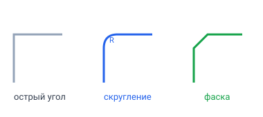
Острый угол → скругление (дуга радиуса R) или фаска (срез)Скругление (fillet)
Заменяет острое ребро дугой заданного радиуса.
- Выбери ребро (или несколько) на детали.
- «Скругление» → задай радиус.
Фаска (chamfer)
Срезает ребро плоской площадкой.
- Выбери ребро.
- «Фаска» → задай размер среза (можно симметричный или с двумя расстояниями).
Делай скругления/фаски в конце, когда основная форма готова. Так проще выбирать рёбра и перестраивать деталь.
Если радиус больше, чем позволяет геометрия (например, толще самой стенки), построение не получится — уменьши радиус.
Дальше → Вращение, оболочка, массивы
🔄 Импорт и экспорт
Деталями можно обмениваться с другими программами через формат STEP (.step,
.stp) — это «общий язык» almost всех CAD-программ.
Импорт STEP
Файл → «Импорт STEP…» добавляет геометрию из STEP-файла как деталь.
Из STEP приходит готовая форма, но без дерева операций (эскизов и выдавливаний внутри нет — только итоговая деталь). Это нормально: так устроен сам формат. Скруглять, резать и собирать такую деталь можно как обычно.
Файлы вроде .sldprt (SolidWorks) ASCAD не открывает — попроси прислать
деталь в STEP, его понимают все.
Экспорт STEP
Готовую деталь можно выгрузить в STEP, чтобы открыть её в другой CAD- программе или отправить на производство.
Обмен внутри ASCAD
- Проект целиком — один файл
.ascad.json(см. Проект — сохранение и открытие). - Отдельная деталь — сохранить/загрузить, чтобы перенести между проектами.
Для печати обычно нужен STL/3MF; STEP — для обмена «умной» геометрией между инженерными программами.
🧷 Сборка: экземпляры и сопряжения
Сборка — это когда несколько деталей ставятся вместе и соединяются, как в конструкторе. Из неподвижных получается узел, из подвижных — механизм.
Экземпляры
Деталь добавляется в сборку как экземпляр (копия). Одну деталь можно поставить несколько раз — все копии берутся из одного файла.
- Один экземпляр обычно делают закреплённым (
fixed) — это «земля», относительно которой двигаются остальные.
Сопряжения (связи)
Сопряжение — правило, как две детали держатся друг за друга. Выбираешь по грани на каждой детали:
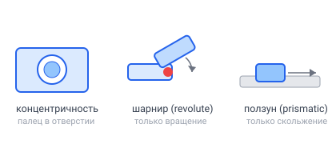
Концентричность (палец в отверстии), шарнир (только вращение), ползун (только скольжение)- Совпадение — грани прижаты друг к другу.
- Концентричность — оси цилиндров совпадают (палец в отверстии): деталь может крутиться и скользить вдоль оси.
- Расстояние — грани на заданном зазоре.
- Revolute (шарнир) — как концентричность, но без скольжения: только вращение (чистая петля).
- Prismatic (ползун) — только скольжение вдоль оси, без вращения.
- Tangent (касание) — цилиндр катится/лежит на плоскости.
- Fix — приклеить деталь на месте.
ASCAD подсказывает подходящие связи карточками-намерениями и подсвечивает грани, которые можно соединить.
Деталь и проблемная грань подсветятся красным, а сверху появится понятное объяснение, почему связь не получилась — поправь выбор граней.
Дальше → Приводы и запуск
⚙️ Приводы и запуск механизма
Если в сборке есть подвижные связи (концентричность, revolute, prismatic), её можно оживить — поставить мотор и посмотреть движение.
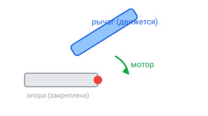
Закреплённая опора + рычаг на шарнире; мотор вращает рычагПанель «Механизм»
- В режиме сборки открой панель «Механизм».
- Выбери сустав (подвижную связь), который крутит мотор.
- Задай скорость:
- вращательный сустав → об/с;
- ползун (prismatic) → мм/с.
- Нажми «Вычислить», затем ▶ Играть — деталь поедет. Есть пауза и ползунок прокрутки по времени.
Запись видео
Включи рычажок «Запись видео» — при проигрывании один цикл запишется в файл (удобно показать механизм в действии).
Периодическое колебание (синус)
Кроме постоянного вращения мотор умеет качаться по синусу на заданный угол — туда-обратно. В панели задаётся постоянная скорость; синус-колебание задаётся из Python:
# ±30° с частотой 2 Гц:
a.motor(hinge, oscillate_deg=30, freq_hz=2)
# линейное колебание ±8 мм:
a.motor(slider, oscillate_mm=8, freq_hz=1)
Мотор задаёт направление: какая деталь движется, а какая — опора. По умолчанию двигается незакреплённая сторона связи.
Когда движение есть, можно посчитать силы в механизме — реакции в шарнирах и нужный момент мотора. См. Силы и графики.
Дальше → Силы и графики
💪 Силы и графики
Механизм можно не только подвигать, но и посчитать силы в нём: какая нагрузка приходит на шарниры (оси, подшипники) под действием тяжести деталей. Это помогает понять, выдержит ли конструкция, и подобрать мотор.
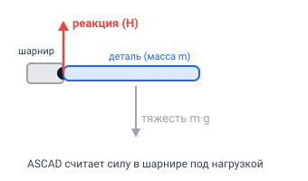
Тяжесть детали (m·g) создаёт реакцию в шарнире — ASCAD считает её в ньютонахЧто нужно сначала
Каждой детали задай материал — из него берётся масса (см. Материал и масса). Без массы силу считать не из чего.
Кнопка «Силы»
- Открой панель «Механизм», выбери сустав и задай движение.
- Нажми «Силы».
- Появится таблица пиковой реакции в каждом шарнире (в ньютонах, Н) — самая большая сила за весь цикл движения.
Расчёт учитывает массы деталей и гравитацию: ASCAD находит силы, которые удерживают детали на их траектории.
Карточка «Графики»
Кнопка «Графики» открывает карточку с кривыми по времени:
- угол и угловая скорость сустава;
- положение детали (X / Y / Z);
- реакция в шарнире (Н) и реактивный момент (Н·м).
Выбираешь величину — видишь, как она меняется за цикл, и где пик.
Силы — в ньютонах (Н), моменты — в ньютон-метрах (Н·м), длины — в мм.
Реакции в шарнирах = нагрузка на оси: по ним подбирают подшипники и проверяют прочность. Это «инженерный» взгляд на твой механизм.
🧰 Библиотека компонентов
Некоторые детали не нужно рисовать с нуля — они уже есть в библиотеке: шестерни и стандартный крепёж. Задаёшь параметры — деталь строится сама.
Что есть
- Шестерни — задаёшь модуль (размер зуба) и число зубьев; ASCAD строит правильный эвольвентный профиль (по ГОСТ). Можно сделать прямозубую или винтовую.
- Крепёж по ГОСТ:
- Шайба (ГОСТ 11371) — по диаметру.
- Гайка шестигранная (ГОСТ 5915) — по размеру резьбы. Витки резьбы в ней не строятся: если нужна настоящая рабочая резьба, смотри урок Резьба — болт и гайка.
Как вставить
- Открой библиотеку компонентов.
- Выбери компонент и задай параметры (модуль/зубья, размер).
- Компонент появится как деталь — дальше с ним можно работать как с любой другой (резать, собирать, ставить в сборку).
Компоненты библиотеки строятся скриптом vcad-py. Его видно в панели Python — можно посмотреть, как параметры превращаются в геометрию, и поучиться.
Поставь две шестерни с одинаковым модулем, соедини оси концентричностью — и получишь зубчатую передачу для механизма.
1. Системы координат — где что находится
Чтобы компьютер понял, куда поставить точку или в какую сторону вытянуть деталь, нужен «адрес» в пространстве. Этот адрес — три числа (x, y, z). А правила, как читать эти три числа, и называются системой координат.
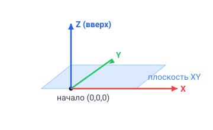
Три оси (X — вправо, Y — вглубь, Z — вверх) и плоскость XY с началом координат🧭 Три оси: X, Y, Z
Представь угол комнаты. Из одного угла выходят три направления (см. рисунок выше):
- X — вправо ◀▶
- Y — вглубь экрана 🔙
- Z — вверх 🔼
- (0, 0, 0) — особая точка, начало координат (по-английски origin). Это «нулевой угол комнаты», от него всё измеряется.
(10, 0, 5) значит: отойди на 10 вправо, на 0 вглубь и
поднимись на 5 вверх. Единицы — миллиметры (мм).
📄 Плоскости для рисования: XY, XZ, YZ
В ASCAD сначала рисуют плоскую фигуру (как на листе бумаги), а потом вытягивают её в объём. Лист можно положить тремя способами — это и есть три плоскости:
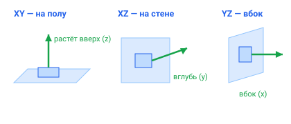
XY — лист на полу, деталь вверх (z); XZ — на стене, вглубь (y); YZ — вбок (x)XY— «пол» 🟫 — самая частая: лист лежит на полу, деталь растёт вверх (z).XZ— «стена перед тобой» 🟦 — деталь растёт в глубину (y).YZ— «боковая стена» 🟥 — деталь растёт вбок (x).
В названии плоскости — две оси, по которым ты рисуешь. Третья,
которой в названии нет, — это направление, куда вытягивается деталь.
XY → рисуешь по X и Y, тянешь по Z.
В коде плоскость выбирают так:
from vcad import Scene, Plane
scene = Scene()
body = scene.add_body(name="Пример")
sk = body.start_sketch(plane=Plane.XY) # ← кладём лист на пол
🔩 Система координат грани (origin, normal, uAxis, vAxis)
Самое интересное. Когда ты рисуешь не на «полу», а прямо на стенке готовой детали (см. 5. Эскиз на грани), у этой стенки есть своя маленькая система координат. ASCAD запоминает для неё 4 вектора-стрелки:
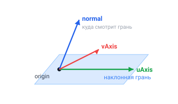
Четыре стрелки грани: origin (ноль), normal (наружу), uAxis (вправо), vAxis (вверх)| Вектор | Простыми словами |
|---|---|
| origin | точка-«ноль» на самой грани (откуда начинаем мерить) |
| normal | стрелка «наружу» из грани — в эту сторону растёт деталь |
| uAxis | направление вправо на этой грани (её собственный «X») |
| vAxis | направление вверх на этой грани (её собственный «Y») |
Грань может быть наклонена как угодно. Эти 4 стрелки говорят ASCAD: «вот тут лежит мой лист бумаги и вот так он повёрнут». Без них рисунок на наклонной грани «соскользнул» бы на пол и деталь сломалась бы. ASCAD заполняет эти стрелки сам, когда ты тыкаешь в грань мышкой.
✅ Проверь себя
- Какой адрес у начала координат?
- Ты нарисовал круг на плоскости
XY. В какую сторону он вытянется? - Что показывает стрелка normal у грани?
(Ответы: 1 — (0, 0, 0); 2 — вверх, по оси Z; 3 — куда «смотрит» грань наружу, в эту сторону пойдёт выдавливание.)
Дальше → 2. Первая деталь
2. Первая деталь — готовые фигуры
Самый быстрый способ получить деталь — взять готовую объёмную фигуру (их называют примитивы) и задать ей размеры. Это как кубики LEGO: кубик, цилиндр, шар, конус.
🧱 Скелет любого скрипта
Каждый скрипт начинается одинаково:
from vcad import Scene # 1) берём «сцену» из библиотеки
scene = Scene() # 2) создаём пустую сцену
body = scene.add_body(name="Деталь") # 3) добавляем деталь
# 4) ... тут строим деталь ...
- scene (сцена) — это весь твой проект, всё, что на экране.
- body — одна деталь внутри сцены. Деталей может быть несколько.
🟦 Кубик
from vcad import Scene
scene = Scene()
body = scene.add_body(name="Кубик")
body.cube(width=30, height=20, depth=10)
width— ширина (по X)height— высота (по Y)depth— глубина (по Z)
Примитив всегда появляется по центру начала координат (0,0,0). Значит кубик высотой 20 занимает от −10 до +10. Это пригодится, когда будешь складывать детали вместе.
🥫 Цилиндр
from vcad import Scene
scene = Scene()
body = scene.add_body(name="Цилиндр")
body.cylinder(radius=12, height=40)
radius— радиус (половина толщины)height— высота
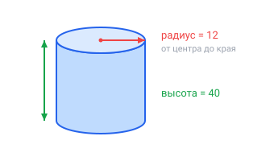
Цилиндр задают радиусом (от центра до края) и высотой⚽ Шар и 🔺 конус
body.sphere(radius=15) # шар
body.cone(radius=12, height=30) # конус
📍 Куда поставить деталь: position
Если не хочешь, чтобы фигура стояла в центре, сдвинь её. Для этого есть
position=(x, y, z) — это адрес из 1. Системы координат:
from vcad import Scene
scene = Scene()
body = scene.add_body(name="Башня")
body.cube(width=20, height=20, depth=20, position=(0, 0, 0)) # внизу
body.cube(width=14, height=14, depth=14, position=(0, 0, 18)) # выше
body.cube(width=8, height=8, depth=8, position=(0, 0, 31)) # ещё выше
Получится башенка из трёх кубиков, как пирамидка! 🗼
Меняй числа и нажимай Запустить — деталь сразу перерисовывается. Так понять размеры проще всего: подвигал — увидел.
✅ Задание
Поставь друг на друга три шара разного радиуса (большой внизу).
Подсказка: используй sphere(radius=...) и position=(0, 0, ...).
Дальше → 3. Эскиз и выдавливание
3. Эскиз и выдавливание
Готовых фигур мало для настоящих деталей. Главный приём инженера такой:
- Эскиз — нарисовать плоскую фигуру на листе (на плоскости).
- Выдавливание (extrude) — «вытянуть» эту фигуру в объём, как выдавливают тесто формочкой или пластилин через шприц.
Плоский эскиз → выдавили на высоту → объёмная деталь
✏️ Шаг 1. Создаём эскиз
from vcad import Scene, Plane
scene = Scene()
body = scene.add_body(name="Пластина")
sk = body.start_sketch(plane=Plane.XY) # лист на полу
sk — это наш «лист бумаги». Теперь рисуем на нём.
✏️ Шаг 2. Рисуем фигуру на эскизе
Прямоугольник от центра
sk.rectangle_centered(center=(0, 0), width=40, height=25)
Круг
sk.circle(center=(0, 0), radius=15)
Другие фигуры
sk.polygon(center=(0, 0), radius=15, sides=6) # шестиугольник
sk.line(start=(0, 0), end=(20, 10)) # отрезок
sk.arc(center=(0, 0), radius=10, start_angle=0, end_angle=90) # дуга
На листе всего две оси, поэтому точки задаются двумя числами: (x, y).
Третью координату (высоту) даст выдавливание.
✏️ Шаг 3. Выдавливаем
body.extrude(sk, height=8)
Всё! Плоский прямоугольник превратился в плитку толщиной 8 мм.
Полный рабочий пример
from vcad import Scene, Plane
scene = Scene()
body = scene.add_body(name="Шайба")
sk = body.start_sketch(plane=Plane.XY)
sk.circle(center=(0, 0), radius=20)
body.extrude(sk, height=5)
Получился «блинчик» — круг радиусом 20, толщиной 5. 🥞
⚙️ Полезные настройки выдавливания
# вытянуть в ОБЕ стороны от листа
body.extrude(sk, height=5, height_backward=5)
# сделать «пирамидку» — сузить кверху (taper меньше 1)
body.extrude(sk, height=20, taper=0.5)
| Параметр | Что делает |
|---|---|
height |
на сколько вытянуть вперёд (по normal) |
height_backward |
на сколько вытянуть назад |
taper |
1 — ровно, <1 — сужается, >1 — расширяется |
✅ Задание
Нарисуй на XY шестиугольник (polygon, sides=6) и выдави на 10 мм.
Потом поменяй sides на 3, 5, 8 — посмотри, что получится.
Дальше → 4. Отверстия и вырезы
4. Отверстия и вырезы
Выдавливание добавляет материал. А чтобы сделать отверстие, нужно наоборот — убрать материал. Этот приём называется вырез (cut).
Идея простая: рисуешь фигуру отверстия и «продавливаешь» её сквозь деталь, как вырубка печенья формочкой. 🍪
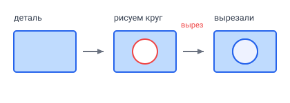
Деталь → рисуем круг → продавливаем сквозь = отверстие🕳️ Отверстие насквозь
from vcad import Scene, Plane
scene = Scene()
body = scene.add_body(name="Шайба с отверстием")
# 1) основная деталь — диск
base = body.start_sketch(plane=Plane.XY)
base.circle(center=(0, 0), radius=20)
body.extrude(base, height=6)
# 2) отверстие — круг поменьше, но ВЫРЕЗАЕМ
hole = body.start_sketch(plane=Plane.XY)
hole.circle(center=(0, 0), radius=8)
body.cut(hole, height=6)
Получилась шайба (колечко). Вместо extrude мы написали cut — и
тем же движением не добавили, а убрали материал.
У них одинаковые настройки (height, height_backward). Разница одна:
extrude добавляет, cut вычитает.
📐 Несколько отверстий
Можно нарисовать на одном эскизе сразу несколько фигур — вырежутся все:
holes = body.start_sketch(plane=Plane.XY)
holes.circle(center=(-12, 0), radius=3)
holes.circle(center=( 12, 0), radius=3)
holes.circle(center=(0, 12), radius=3)
holes.circle(center=(0, -12), radius=3)
body.cut(holes, height=6)
Четыре крепёжных отверстия за раз! 🔩
⚠️ Частая ошибка: отверстие «не достаёт»
Помни из 2. Первая деталь: фигуры стоят по центру. Если деталь идёт от 0 до 6 по высоте, то и вырез должен проходить через эти же 6 мм. Чтобы точно пробить насквозь, делают вырез чуть больше и тянут в обе стороны:
body.cut(hole, height=10, height_backward=10) # с запасом — точно насквозь
Если отверстия нет — почти всегда вырез просто «не доехал» до материала.
Увеличь height или добавь height_backward.
✅ Задание
Сделай диск радиусом 15, толщиной 4, и пробей в нём 2 или 4 отверстия радиусом 1.5 для ниток.
Дальше → 5. Эскиз на грани
5. Эскиз на грани
Пока мы рисовали только на трёх «главных» плоскостях (пол и две стены). Но настоящая сила ASCAD — рисовать прямо на стенке уже готовой детали. Например: сделать коробку, а потом нарисовать кнопку на её верхней грани.
Тут нам и пригодится система координат грани из 1. Системы координат.
🤔 Зачем грани своя система координат?
Представь, что ты приклеил листочек на наклонную крышу домика. Чтобы рисовать на этом листочке, нужно знать:
normal — куда торчит грань (туда растёт деталь); uAxis/vAxis — «вправо/вверх» на грани
- origin — где у листочка «ноль»;
- uAxis — где на нём «вправо»;
- vAxis — где «вверх»;
- normal — куда торчит наружу.
Эти 4 стрелки превращают любую наклонную грань в обычный ровный лист, на котором удобно рисовать. ASCAD считает их сам.
🖱️ Как это делается на практике
Чаще всего эскиз на грани создают мышкой, а не вручную в коде:
- Построй деталь (например, коробку).
- Кликни по нужной грани в 3D-окне.
- Нажми «Эскиз в деталь» (или начни новый эскиз) — ASCAD сам положит лист на эту грань и запомнит её систему координат.
- Рисуй фигуру и выдави/вырежи как обычно.
Когда ASCAD превращает твою деталь обратно в скрипт (кнопка «Деталь в код»), он записывает систему координат грани в код вот так:
sk = body.start_sketch(
plane="CUSTOM",
face_coord_system={
"origin": (0, 0, 10), # точка-ноль на грани
"normal": (0, 0, 1), # куда торчит грань
"uAxis": (1, 0, 0), # «вправо» на грани
"vAxis": (0, 1, 0), # «вверх» на грани
},
)
sk.circle(center=(0, 0), radius=5)
body.extrude(sk, height=3) # кнопка вырастет по normal
Слово CUSTOM значит «особая плоскость — вот её 4 стрелки».
🏗️ Пример: коробка с кнопкой сверху
from vcad import Scene, Plane
scene = Scene()
body = scene.add_body(name="Коробка с кнопкой")
# 1) коробка: квадрат 40×40, высота 10
base = body.start_sketch(plane=Plane.XY)
base.rectangle_centered(center=(0, 0), width=40, height=40)
body.extrude(base, height=10)
# 2) кнопка на ВЕРХНЕЙ грани (она на высоте z = 10, смотрит вверх)
top = body.start_sketch(
plane="CUSTOM",
face_coord_system={
"origin": (0, 0, 10),
"normal": (0, 0, 1),
"uAxis": (1, 0, 0),
"vAxis": (0, 1, 0),
},
)
top.circle(center=(0, 0), radius=6)
body.extrude(top, height=3) # кнопка торчит на 3 мм вверх
Если убрать face_coord_system, ASCAD не поймёт, где лежит грань, и
кнопка «съедет» не туда, а деталь сломается. Поэтому, когда строишь на
грани мышкой, не удаляй этот блок из сгенерированного кода.
✅ Задание
Сделай коробку, кликни по верхней грани, начни на ней эскиз, нарисуй маленький круг и выдави его — получится труба на домике. 🏠
Дальше → 6. Отладчик
6. Отладчик — смотрим, как деталь растёт по шагам
Обычно ты жмёшь Запустить, и сразу появляется готовая деталь. Но иногда хочется понять: что делает каждая строчка кода? Или найти, где модель «сломалась». Для этого есть отладчик — он выполняет скрипт по одному шагу и после каждого шага дорисовывает только то, что построено к этому моменту. Как будто смотришь рецепт по пунктам, а не сразу готовое блюдо. 🍰
🎛️ Кнопки
В шапке редактора рядом с ▶ Запустить:
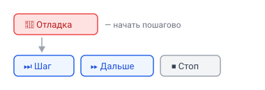
«🐞 Отладка» запускает пошаговый режим; затем — Шаг, Дальше, Стоп- 🐞 Отладка — начать. Скрипт «замирает» на первой строке.
- ⏭ Шаг — выполнить одну строку (один оператор). После шага во вьюпорте видно, что добавилось.
- ⏩ Дальше — выполнять подряд до точки останова (см. ниже) или до конца скрипта.
- ⏹ Стоп — закончить отладку.
Текущая строка (на которой пауза) подсвечивается в редакторе.
🔴 Точка останова (breakpoint)
Точка останова — это метка «остановись здесь». Поставь её, чтобы быстро домотать до интересного места, не нажимая «Шаг» сто раз.
Кликни мышкой в узкую полоску слева от номеров строк — появится красная точка 🔴. Клик ещё раз — снять. Потом жми ⏩ Дальше, и выполнение остановится прямо перед этой строкой.
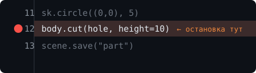
Красная точка слева от номера строки — «Дальше» остановится прямо тут👀 Что значит «рисуется только выполненное»
Помни золотое правило: сцена строится по кусочкам —
сначала scene = Scene(), потом детали и операции добавляются по очереди.
Отладчик показывает ровно это:
| После шага | Что на экране |
|---|---|
scene = Scene() |
пусто |
body = scene.add_body(...) |
пустая деталь |
body.extrude(sk, ...) |
появилась первая деталь |
следующий cut |
в детали прорезалось отверстие |
Так сразу видно, какая строка что делает. 🔍
Цикл for или вызов функции отладчик выполняет за один шаг целиком
(внутрь не заходит). Для большинства учебных скриптов это нормально —
одна строка обычно = одна деталь или операция.
✅ Задание
Возьми готовый скрипт (например, из урока 4. Отверстия и вырезы), нажми 🐞 Отладка и прожми ⏭ Шаг до конца. На каком шаге появляется отверстие? Поставь туда 🔴 точку останова и проверь кнопкой ⏩ Дальше.
Так инженеры ищут ошибки: если деталь получилась не такой, проходишь по шагам и смотришь, на каком именно всё пошло не так.
Назад в Оглавление
7. Внешний запуск — пишем код в своём редакторе
Обычно скрипт набирают прямо в ASCAD, в правой панели Python. Но если тебе удобнее писать код в своём редакторе (например, в Cursor или VS Code, где есть умные подсказки и ИИ-помощник) — можно делать так: пишешь скрипт у себя, нажимаешь «запустить», а деталь строится в браузере, в открытой вкладке ASCAD.
Это и называется внешний запуск.
Твой любимый редактор + автодополнение + ИИ-помощник остаются с тобой, а ASCAD служит «окном», в котором сразу видно результат. Каждый раз, когда ты сохраняешь файл, модель пересобирается сама.
🔗 Как это работает: ключ-связка
Чтобы твой скрипт «нашёл» именно твою вкладку (а не чужую), используется
ключ-связка — короткий код вроде BF7S-WMXM. Один и тот же ключ стоит
и в браузере, и в команде запуска. Только так модель прилетит именно к тебе.
твой редактор ──(скрипт)──▶ сервер ──(по ключу)──▶ твоя вкладка ASCAD
🛠️ Настройка — один раз
1. Установи команду vcad-run (нужен Python на компьютере). В терминале:
pip install -e vcad-py
2. Включи приём в ASCAD. Открой правую панель Python, нажми кнопку с антенной 📡 в её шапке. В окошке:
- поставь галочку «Слушать внешние запуски» (рядом загорится «● приём включён»);
- скопируй ключ-связку;
- там же есть готовая команда — её можно скопировать целиком.
▶️ Запуск
В своём редакторе сохрани скрипт (например, part.py) — обязательно с
переменной scene на верхнем уровне, её и ищет vcad-run:
from vcad import Scene
scene = Scene() # ← важно: на верхнем уровне
body = scene.add_body(name="Деталь")
sk = body.start_sketch(plane="XY")
sk.rectangle(corner=(-20, -15), width=40, height=30)
body.extrude(sk, height=15)
Затем в терминале:
vcad-run part.py --url https://ascad3d.ru/api --key BF7S-WMXM --watch
--url— адрес из окошка (на сайтеhttps://ascad3d.ru/api);--key— твой ключ-связка;--watch— следить за файлом: при каждом сохранении деталь пересоберётся.
Если всё хорошо, увидишь:
✓ pushed → 1 tab(s)
— и деталь появится в браузере. Меняй размеры, сохраняй файл — модель будет обновляться сама.
Каждый scene.add_body(...) создаёт новую деталь в той же сцене:
tower = scene.add_body(name="Башня")
tower.cylinder(radius=12, height=60, position=(60, 0, 30))
🆘 Если не работает
Сервер скрипт принял, но ни одна вкладка его не слушает под этим ключом. Проверь:
- в браузере включена галочка «Слушать внешние запуски»;
- ключ во вкладке совпадает с тем, что в команде (если нажимал «Новый ключ» — он сменился, возьми текущий);
- адрес
--url— именноhttps://ascad3d.ru/api(а не другой).
В скрипте нет переменной scene на верхнем уровне. Если ты завернул код в
функцию def main(): ..., переменная scene оказывается «спрятанной» —
вынеси scene = Scene() наружу.
На сайте ascad3d.ru всё уже работает. Локально (для разработки) адрес
будет http://localhost:7910, и тогда сервис-посредник нужно запустить
самому.
Связанные уроки: 2. Первая деталь · 6. Отладчик · Шпаргалка
📖 Справочник API vcad-py
Все основные команды библиотеки vcad. Подробные объяснения — в уроках;
здесь — краткая шпаргалка с сигнатурами. Координаты точек принимаются как
(x, y) или Point2D; углы — в градусах, длины — в мм.
from vcad import Scene, Plane
scene = Scene()
Scene — сцена (деталь)
scene.add_body(name="Body") -> Body— добавить деталь.scene.bodies -> list[Body]— список тел.scene.boolean(...)— булева операция между деталями.scene.save(path)/Scene.load(path)— сохранить / открыть.scene.to_dict()/scene.to_json(indent=2)— сериализация.
К концу скрипта должна существовать переменная scene — её рисует ASCAD.
Body — деталь
Свойства: body.id, body.name, body.color,
body.set_color("#rrggbb"), body.set_material("steel") /
body.set_material(density=1200) (материал → масса, см. Материал и масса).
Примитивы (готовые детали)
body.cube(width=1, height=1, depth=1)body.cylinder(radius=0.5, height=1)body.sphere(radius=0.5)body.cone(radius=0.5, height=1)
Эскиз и операции
body.start_sketch(plane=Plane.XY, offset=0.0) -> Sketch— начать эскиз.body.extrude(sketch, height, height_backward=0, draft_angle=0, twist_angle=0, is_cut=False)— выдавить.body.cut(sketch, ...)— вырез (то же, но вычитает).body.revolve(sketch, axis_start, axis_end, angle=360, cut=False)— вращение.body.sweep(sketch, path_sketch, ...)/body.sweep_cut(...)— свип по траектории.body.sweep_helix(sketch, pitch=.., height=.., radius=.., center=(x,y,z), lefthand=False)— свип по спирали (пружины, резьба). Профиль встаёт на спираль:+Xэскиза — наружу от оси,+Y— вдоль оси. Вырез по спирали (is_cut=True) не работает — резьбу добавляют, см. Резьба — болт и гайка.body.loft(sections, ...)— лофт между сечениями.body.shell(faces, thickness)— оболочка (полая деталь).body.fillet_3d(edges=..., faces=..., radius=R)— скругление рёбер.body.chamfer_3d(edges=..., distance1=D, distance2=None)— фаска.body.linear_pattern(count, spacing, direction)— линейный массив.body.circular_pattern(count, axis_start, axis_end, ...)— круговой массив.body.mirror(...)— зеркало.body.import_step(path)— импорт STEP.
Имена граней/рёбер (для сборки)
body.name_face(name, ...)/body.name_edge(name, ...)— пометить грань/ребро именем, чтобы сослаться на него в сборке.
Sketch — эскиз
Элементы (возвращают id): point, line, circle, arc,
rectangle, rectangle_centered, polygon(center, radius, sides),
ellipse, slot(start, end, radius), polyline(points), spline(points),
text(position, text, height=10) (см. Текст в эскизе), dimension(...).
Ограничения (см. Размеры и ограничения): horizontal, vertical,
fixed, parallel, perpendicular, equal, tangent, concentric,
symmetric(e1, e2, axis), coincident(p1, p2), distance(p1, p2, value),
angle(e1, e2, value), radius(element, value), point_on_line,
point_on_circle, midpoint. construction(*ids) — пометить как
вспомогательную геометрию.
body = scene.add_body(name="Планка")
sk = body.start_sketch(plane=Plane.XY)
sk.rectangle((0, 0), 40, 10)
body.extrude(sk, height=5)
Assembly — сборка
from vcad import Assembly
a = Assembly(name="Узел")
a.import_part(path, name=None, fixed=False, translation=..., rotation=...) -> PartInstancea.instances/a.mates— списки.- Сопряжения (см. Экземпляры и сопряжения):
a.mate_fix(inst),a.mate_coincident(face_a, face_b, flip=False),a.mate_distance(face_a, face_b, value),a.mate_concentric(...),a.mate_revolute(...),a.mate_prismatic(...),a.mate_tangent(...),a.mate_edge_coincident(...),a.mate_point_coincident(...),a.mate_point_on_edge(...). Грань задаётся как(instance, face_id),(instance, "имя_грани")илиFaceRefDoc. a.save(path)/Assembly.load(path).
Мотор (привод)
a.motor(mate_id, *, ...) — ровно один из режимов:
rev_per_sec=N— постоянное вращение (об/с);angle="f(time)"— угол в радианах как функция времени, напр."2*pi*time";mm_per_sec=N— постоянное линейное (для prismatic-связи);distance="f(time)"— линейное перемещение, мм;oscillate_deg=A— синус-колебание ±A° (доп.freq_hz,phase_deg);oscillate_mm=A— линейное колебание ±A мм.mover=— какая деталь движется (по умолчанию незакреплённая сторона).
hinge = a.mate_concentric((base, "ось"), (arm, "втулка"))
a.motor(hinge, oscillate_deg=30, freq_hz=2, mover=arm) # качается ±30°
PartInstance — экземпляр в сборке
inst.id, inst.name, inst.path, inst.set_transform(...),
inst.fix(), inst.face_at(...).
Открой правую панель Python, вставь скрипт, нажми Запустить — деталь или сборка появится во вьюпорте. Сборку оживляет панель «Механизм» (см. Приводы и запуск).
👥 Совместная работа
ASCAD умеет работать вместе — для уроков в классе и совместных проектов. Режим выбирается в меню «?» в углу.
Четыре режима
- Работа — обычный одиночный режим (по умолчанию).
- Учитель — ты ведущий: создаёшь комнату, и всё, что ты делаешь, транслируется ученикам в реальном времени.
- Ученик — подключаешься к комнате учителя и смотришь его экран вживую. В любой момент можно «забрать к себе» состояние и продолжить самостоятельно (это переключит тебя в режим «Работа» со своей копией).
- Совместно — все участники равноправно редактируют одну сцену (последнее изменение побеждает, без блокировок).
Комнаты и чат
- Учитель создаёт комнату; ученики присоединяются по ней.
- Есть чат комнаты: имена участников, список присутствующих, история сообщений, модерация.
Чтобы создать комнату (режим «Учитель»), нужен аккаунт. Ученики подключаются как гости — регистрация им не требуется.
Учитель показывает построение детали на «Учителе», класс смотрит на «Ученике», затем каждый забирает деталь к себе и доделывает сам.
⌨️ Горячие клавиши
Маленькая шпаргалка, чтобы работать быстрее.
Везде
| Клавиши | Действие |
|---|---|
| Ctrl + Z | Отменить |
| Ctrl + Y / Ctrl + Shift + Z | Повторить |
| Esc | Закрыть окно / выйти из инструмента |
У части, эскиза и сборки своя история отмены. Отмена в эскизе не трогает то, что ты делал в сборке, и наоборот.
3D-вид
| Действие | Как |
|---|---|
| Вращать | средняя/правая кнопка мыши |
| Зум | колесо мыши |
| Сдвиг | Shift + средняя кнопка |
Инструменты эскиза
Инструменты выбираются на панели рисования (а у многих есть быстрый вызов
Alt + буква). Самые частые: линия, прямоугольник, окружность, дуга, текст,
размер. Подробнее — Инструменты эскиза.
Наведи курсор на кнопку — во всплывающей подсказке видно её название (и горячую клавишу, если есть).
🧱 Таблица материалов
Материал задаёт плотность, из которой считается масса детали (масса = плотность × объём). Выбирается в «Свойствах детали» (см. Материал и масса).
| Материал | Плотность, кг/м³ |
|---|---|
| Сталь | 7850 |
| Алюминий | 2700 |
| Латунь | 8500 |
| Медь | 8960 |
| Титан | 4500 |
| ABS-пластик | 1040 |
| PLA-пластик | 1240 |
| Нейлон | 1150 |
| Дерево | 500 |
| Стекло | 2500 |
Если нужного материала нет — выбери «Своя плотность» и впиши число (кг/м³).
Из Python: body.set_material(density=1200) (см. Справочник API).
Масса нужна для расчёта сил в механизме — реакций в шарнирах и момента мотора (см. Силы и графики).
🧾 Шпаргалка ASCAD
Все команды на одной странице. Держи рядом, когда пишешь скрипт. Подробности — в уроках по ссылкам.
Скелет скрипта
from vcad import Scene, Plane
scene = Scene() # обязательно!
body = scene.add_body(name="Деталь")
# ... строим ...
К моменту, когда скрипт завершится, должна существовать переменная
scene — её показывает ASCAD. Создаёшь её в начале (scene = Scene()),
дальше наполняешь; «в конце» = «к завершению», а не «последняя строка».
Сохранять (save) в окне редактора не нужно.
Готовые фигуры (примитивы) → 2. Первая деталь
body.cube(width=30, height=20, depth=10)
body.cylinder(radius=12, height=40)
body.sphere(radius=15)
body.cone(radius=12, height=30)
# сдвинуть: position=(x, y, z)
body.cube(width=10, height=10, depth=10, position=(0, 0, 25))
➡ Примитив всегда появляется по центру (0, 0, 0).
Плоскости → 1. Системы координат
| Запись | Лист лежит как | Деталь растёт по |
|---|---|---|
Plane.XY |
пол | Z (вверх) |
Plane.XZ |
стена перед тобой | Y (вглубь) |
Plane.YZ |
боковая стена | X (вбок) |
Эскиз + выдавливание → 3. Эскиз и выдавливание
sk = body.start_sketch(plane=Plane.XY)
sk.circle(center=(0, 0), radius=15)
sk.rectangle_centered(center=(0, 0), width=40, height=25)
sk.polygon(center=(0, 0), radius=15, sides=6)
sk.line(start=(0, 0), end=(20, 10))
sk.arc(center=(0, 0), radius=10, start_angle=0, end_angle=90)
body.extrude(sk, height=8) # добавить объём
body.extrude(sk, height=8, height_backward=8) # в обе стороны
body.extrude(sk, height=20, taper=0.5) # сузить кверху
Отверстия и вырезы → 4. Отверстия и вырезы
hole = body.start_sketch(plane=Plane.XY)
hole.circle(center=(0, 0), radius=8)
body.cut(hole, height=10, height_backward=10) # пробить насквозь
➡ extrude = добавить, cut = убрать.
Эскиз на грани → 5. Эскиз на грани
sk = body.start_sketch(
plane="CUSTOM",
face_coord_system={
"origin": (0, 0, 10), # ноль на грани
"normal": (0, 0, 1), # куда торчит грань
"uAxis": (1, 0, 0), # вправо на грани
"vAxis": (0, 1, 0), # вверх на грани
},
)
➡ Обычно делается мышкой (клик по грани → «Эскиз в деталь»). Блок
face_coord_system не удалять.
Скругления и фаски (продвинутое)
Скруглить острое ребро (fillet) или срезать его под углом (chamfer) проще всего мышкой: выдели ребро или грань в 3D-окне и нажми кнопку «Скругление» / «Фаска», задай радиус. В коде это выглядит так (ASCAD подставляет рёбра сам):
body.fillet_3d(radius=2, edges=[...]) # скруглить рёбра
body.chamfer_3d(distance1=1, edges=[...]) # срезать рёбра под углом
Отладчик → 6. Отладчик
- 🐞 Отладка — старт пошагового выполнения.
- ⏭ Шаг — одна строка; после неё видно, что добавилось.
- ⏩ Дальше — до точки останова или до конца.
- ⏹ Стоп — завершить.
- 🔴 Точка останова — клик по полоске слева от номеров строк.
➡ Рисуется только то, что построено к текущему шагу.
❗ Если что-то не так
- Ничего не появилось → проверь, что в конце есть переменная
scene. - Отверстия нет → вырез «не достаёт», увеличь
height/ добавьheight_backward. - Деталь не там / съехала → проверь
positionи плоскость эскиза. - Красная ошибка → прочитай последнюю строку: там обычно номер строки и подсказка, что поправить.
Назад в Оглавление